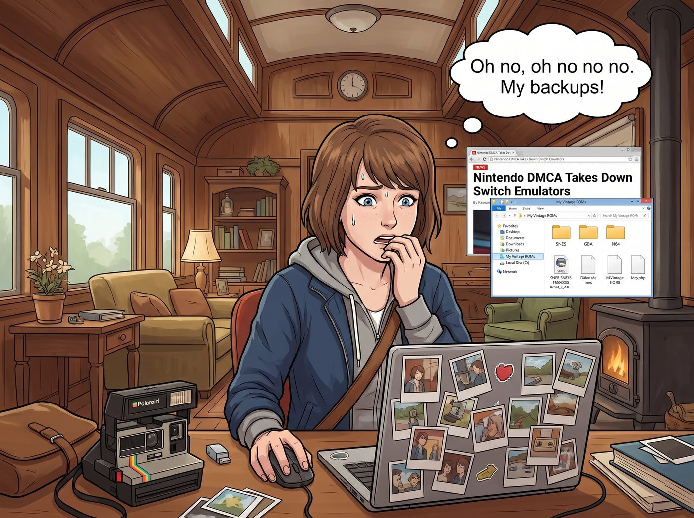

法外狂徒的避風港

當 Max 在她那台螢幕貼著拍立得貼紙的筆記本上，看到那則關於任天堂法務部祭出DMCA、在GitHub上全面下架Switch模擬器的新聞時，她的第一反應並不是為玩家哀悼，而是立刻陷入了一場屬於復古文青的數位資產恐慌症。
「完了，完了完了完了。」Max 咬著指甲，滑鼠在資料夾裡瘋狂點擊，確認著她那些珍藏了十幾年的超級任天堂、Game Boy Advance 和 N64 的遊戲 ROM 備份檔。「如果連開源社群最大的據點都被這群東半球最強法務部攻陷了，我的那些復古模擬器遲早也會被連根拔起。數位保存簡直就像建立在沙灘上的城堡一樣脆弱！」
一、街頭龐克的怒吼
坐在旁邊保養滑板輪軸的 Chloe 探過頭看了一眼螢幕，立刻發出了一聲充滿街頭龐克精神的怒吼。
「這群吃人不吐骨頭的版權吸血鬼！」Chloe 把螺絲起子重重地拍在桌上，「這根本是對電子遊戲歷史的數位屠殺！他們自己不願意把老遊戲做好向下相容，還不讓開源社群的玩家自己動手？這是純粹的資本壟斷！我們應該駭進他們的伺服器，把所有的角色模型都換成比中指的貼圖！」
正在敷眼膜的 Victoria 冷冷地哼了一聲，名媛的資本家雷達再次啟動：「Price，請妳那充滿無政府主義的腦袋清醒一點。這叫保護智慧財產權。如果 Chase 財團旗下的畫廊被人隨便掃描藝術品然後放在網路上免費開源，我也會讓律師把他們告到連內褲都剩不下。任天堂只是在行使他們合法的財產權而已，雖然他們法務部的吃相確實像是一群沒有感情的獵犬。」
「但是 Victoria！這些是文化遺產啊！」Max 抱著自己的外接硬碟，彷彿抱著最後的火種，「如果代碼庫全部被清洗掉，以後的人要怎麼體驗那些已經絕版的像素藝術？」
二、倖存者偏差恐慌
就在 Max 準備為數位時代的脆弱流下時代眼淚時，一直在旁邊安靜敲擊鍵盤的實習生 Lily，發出了那種標誌性的、令人安心卻又毛骨悚然的軟糯聲音。
「Max 學姐，您陷入了典型的倖存者偏差恐慌。」
Lily 推了推反光的圓框眼鏡，將她的電腦螢幕轉向大家。畫面上是一排排整齊的代碼和極度複雜的伺服器架構圖。
「首先，任天堂這次的狙擊目標是 Switch 模擬器，因為這涉及他們當前世代的商業核心利益。您那些二三十年前的像素遊戲 ROM，在他們的法務優先級裡連灰塵都算不上。」Lily 喝了一口熱茶，繼續說道，「其次，當我在做我們車廂的程式碼管理與日常問題追蹤時，早就設定了自動爬蟲程序。一旦開源社群裡任何高評分的模擬器專案被標記為潛在版權風險，我的程序就會在它被正式下架前，自動將完整的源代碼鏡像克隆到我們車廂的本地加密 NAS 伺服器裡。」
Lily 露出了一個純潔無暇的微笑：「換句話說，任天堂的法務部只能清洗公有雲端。而在我們這節由核反應爐供電的車廂裡，您的復古遊戲代碼已經獲得了物理級別的絕對庇護。」
聽到這裡，Chloe 激動得差點把滑板砸了：「Lily！妳簡直就是這個廢土世界的普羅米修斯！妳居然從任天堂手裡盜取了代碼火種！」
三、實體塑膠卡匣的尊嚴
但 Max 的文青執念並沒有完全被代碼安撫。作為一個堅持使用底片相機和卡帶隨身聽的人，這場風波讓她徹底看透了數位虛擬資產的不可靠。
「雖然有 Lily 的備份，但我決定不陪矽谷巨頭和法務部玩這種隨時可能消失的數位遊戲了。」Max 堅定地拔掉了外接硬碟，轉身從抽屜裡拿出了一個破舊但擦得發亮的 Game Boy Color 實體機。
她打開一個網頁，螢幕上全是密密麻麻的日文。
「這是什麼？某個暗網的走私論壇嗎？」Victoria 挑起一邊眉毛。
「不，這是我的終極物理防禦計畫。」Max 的眼神裡閃爍著復古狂熱，「我最近都在用跨國代購服務，直接從日本的中古市場標下那些二手的原裝實體卡匣。不管版權法怎麼改，不管他們怎麼發律師函，他們總不能順著太平洋的網線爬過來，把塞在我抽屜裡的實體塑膠卡匣給沒收了吧？只要我手裡有實體的電路板，我的童年就永遠吃不了癟。」
看著 Max 滿臉神聖地將一盤剛從日本代購回來的經典遊戲實體卡匣插入掌機，伴隨著那聲清脆的開機音效，車廂裡的氣氛終於恢復了平靜。
在這個充滿了數位監控、版權大戰與極端氣候的世界裡，實習生用駭客級別的代碼管理守護了虛擬的陣地，而攝影師則用最原始的跨國實體海淘，捍衛了復古文青最後的物理尊嚴。這兩者的結合，讓二號車廂成為了全美版權法最難以滲透的法外狂徒避風港。